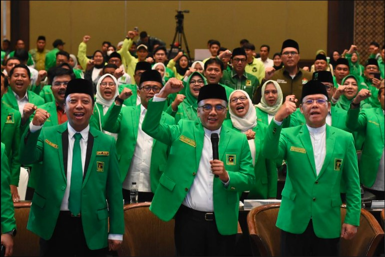

Latar pembentukan
PPP dibentuk melalui penggabungan empat partai politik Islam pada 1973 sebagai bagian dari penyederhanaan sistem kepartaian Indonesia.
Aspirasi Didengar, Informasi Terbuka, Aksi Terasa.
TENTANG PPP
Mengenal lebih dekat Partai Persatuan Pembangunan melalui sejarah, nilai perjuangan, visi, misi, serta komitmennya dalam kehidupan berbangsa dan bernegara.
IDENTITAS ORGANISASI
Partai Persatuan Pembangunan (PPP) merupakan partai politik Indonesia yang didirikan pada 5 Januari 1973. PPP lahir dari penggabungan empat partai politik Islam dan menjadikan nilai-nilai keislaman sebagai landasan perjuangan organisasi.
Dalam perkembangannya, PPP memperjuangkan berbagai isu yang berkaitan dengan kehidupan masyarakat, mulai dari ekonomi kerakyatan, pendidikan, kesejahteraan sosial, hingga penegakan hukum dan demokrasi.
Dengan mempertahankan identitas keislaman, PPP berupaya membangun komunikasi yang terbuka, memperkuat persatuan, serta memperjuangkan kepentingan masyarakat dalam kehidupan berbangsa dan bernegara.

Partai Persatuan Pembangunan didirikan pada 5 Januari 1973 melalui penyatuan empat partai politik Islam, yaitu Nahdlatul Ulama (NU), Partai Muslimin Indonesia (Parmusi), Partai Syarikat Islam Indonesia (PSII), dan Persatuan Tarbiyah Islamiyah (Perti).
Sejak berdiri, PPP telah melalui berbagai dinamika politik nasional, mulai dari masa Orde Baru, Reformasi, hingga perkembangan demokrasi Indonesia saat ini.
PPP dibentuk melalui penggabungan empat partai politik Islam pada 1973 sebagai bagian dari penyederhanaan sistem kepartaian Indonesia.
PPP terus berpartisipasi dalam kehidupan politik nasional dan menghadapi berbagai perubahan sistem pemerintahan serta dinamika demokrasi.
PPP mempertahankan nilai-nilai keislaman sebagai identitas perjuangan, dengan lambang Ka'bah yang menjadi simbol khas organisasi.
ARAH PERJUANGAN
Terwujudnya masyarakat yang bertaqwa kepada Allah SWT dan negara Indonesia yang adil, makmur, sejahtera, bermoral, demokratis, tegaknya supremasi hukum, penghormatan terhadap Hak Asasi Manusia (HAM), serta menjunjung tinggi harkat-martabat kemanusiaan dan keadilan sosial yang berlandaskan kepada nilai-nilai ke-Islaman.
Menjadikan nilai agama sebagai landasan moral dalam kehidupan bermasyarakat, berbangsa, dan bernegara.
Pernyataan ResmiMenghormati hak dan martabat manusia, menjunjung keadilan, serta menolak diskriminasi melalui nilai ukhuwah basyariyah.
Aspirasi RakyatMenjaga keutuhan bangsa dengan memperkuat ukhuwah wathaniyah dan membangun keharmonisan dalam keberagaman.
FAQ & KontakMewujudkan kehidupan politik yang demokratis dengan mengutamakan kedaulatan rakyat dan musyawarah untuk mufakat.
Pernyataan ResmiMewujudkan masyarakat yang adil dan sejahtera melalui pemerataan kesempatan serta pengurangan kesenjangan ekonomi, sosial, dan budaya.
Aspirasi RakyatKEPEMIMPINAN & STRUKTUR ORGANISASI
Tidak ada nama, jabatan, periode kepengurusan, atau bagan yang direka. Struktur hanya akan ditampilkan setelah materi resmi terverifikasi.
Area kepemimpinan dan bagan organisasi menunggu dokumen sumber. Tidak ada hierarki atau posisi organisasi yang diasumsikan dalam rancangan ini.
Cocokkan nama dan jabatan dengan keputusan yang berlaku; cantumkan masa kepengurusan; periksa hubungan antarunit; tambahkan tanggal pembaruan dan rujukan dokumen. Semua materi perlu ditinjau oleh pemilik informasi.
Rujukan resmi: ppp.or.id